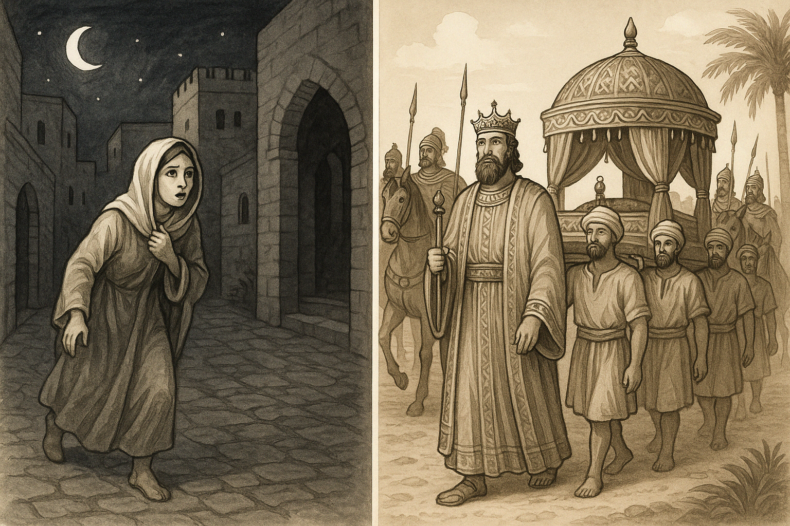
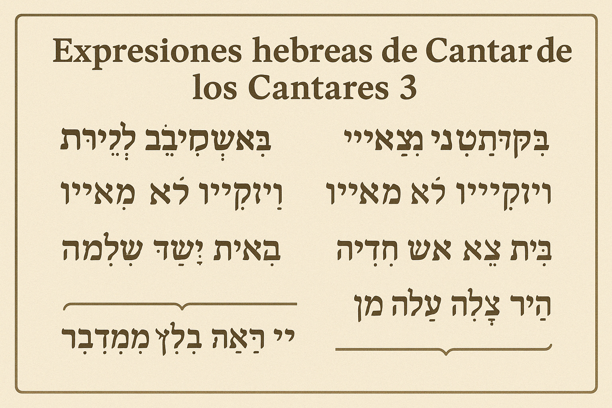
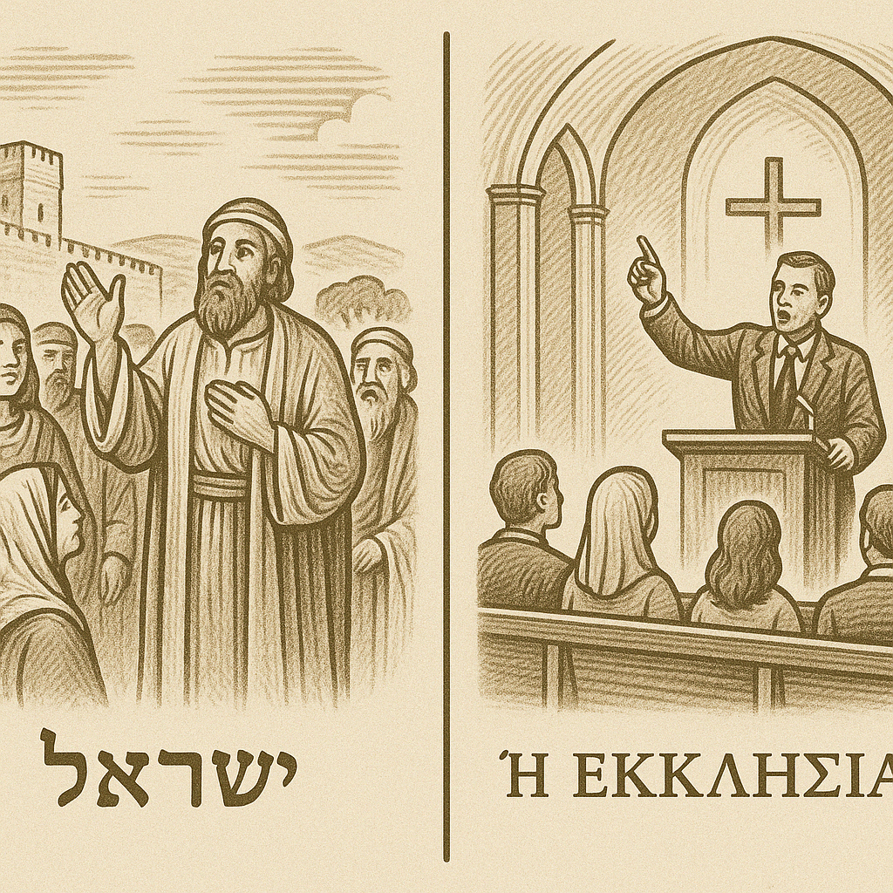
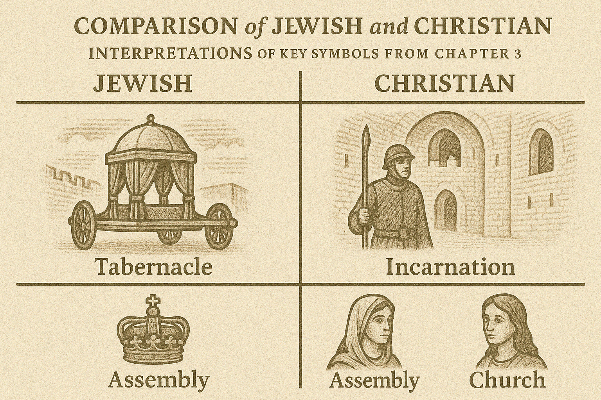

Un análisis profundo del amor y la búsqueda entre los amados en esta joya poética bíblica
El capítulo 3 de Cantar de los Cantares se divide en dos escenas poéticas. En los versículos 1-5, la voz femenina describe cómo "por las noches" busca a su amado en su lecho y por la ciudad, hasta encontrarlo y llevarlo a la casa de su madre. En los versículos 6-11, se presenta una escena de cortejo real: una procesión nupcial con el rey Salomón, sesenta guerreros escoltando un palanquín (litera o carroza) adornado con perfumes, y una invitación a las "hijas de Sión" a contemplar al rey con la corona del día de su boda.

El lenguaje original hebreo de Cantar de los Cantares 3 está cargado de matices poéticos. Algunos términos clave y expresiones merecen atención especial:
En hebreo se lee בַּלֵּילוֹת (bal-lēyłōṯ), literalmente "en las noches". El uso del plural sugiere repetición o duración. Puede entenderse como "noche tras noche" o "durante las largas horas de la noche". Esto indica que la amada ha buscado a su amado en más de una noche o durante toda la noche, enfatizando la persistencia de su anhelo.
Esta frase se repite cuatro veces en los versículos 1-4 como אֶת שֶׁאָהֲבָה נַפְשִׁי (et she'ahavá nafshí). En hebreo נֶפֶשׁ (nefesh) literalmente es "alma" o "ser interior", pero funciona como un pronombre enfático de primera persona. La expresión significa "aquél a quien mi alma ama" o simplemente "mi amado". Su repetición refuerza la intensidad del amor de la joven por su amado. El uso de "mi alma" denota que este amor proviene de lo más profundo de ella, implicando una entrega personal total.

El verbo bqš בִּקֵּשׁ (biqqēsh) significa "buscar con diligencia". Implica un acto consciente y esforzado de búsqueda. La insistencia "lo busqué y no lo hallé" sugiere la ansiedad típica del amor: en el poema, la amada teme la ausencia del amado y emprende una búsqueda activa aun en la noche.
Estas frases describen un movimiento nocturno por la ciudad. La palabra שׁוּק (shuq) refiere a plazas o mercados, y רְחֹבוֹת (reẖovot) a calles amplias. El hebreo transmite la idea de una búsqueda apresurada ("Me levantaré ahora mismo", "אָקוּמָה נָּא (aqumá na)"). Es notable que una joven recorra la ciudad de noche; esto añade un tono onírico o extraordinario al relato, y muchos comentaristas sugieren que esta escena podría ser un sueño o anhelo más que un evento literal.
"Centinelas" traduce שֹׁמְרִים (shomrím), plural de shomer, guardián. Indica guardias nocturnos patrullando la ciudad, una imagen realista de seguridad urbana en la antigüedad. La amada les pregunta por su amado, lo que refleja la desesperación de su búsqueda. Lingüísticamente, su aparición súbita y breve (v.3) transmite la rapidez con que ella sigue adelante: "Me encontraron los centinelas… (les pregunté) '¿Han visto al que ama mi alma?'". No se detalla respuesta; inmediatamente en v.4 ella encuentra a su amado. Esto sugiere que, en el poema, la ayuda de terceros es mínima: la unión de los amantes ocurre casi por providencia más que por guía humana.
Cuando finalmente la amada encuentra al amado, dice אֲחַזְתִּיו ולא אַרְפֶּנּוּ (ajaẓtív velō 'arpennú). El verbo 'ahaz אָחַז significa "asir con fuerza" o "sujetar firmemente". Indica que ella lo abraza con determinación para no perderlo de nuevo. Esta expresión gráfica comunica la pasión y la determinación de la joven por retener a su amado. Luego añade que lo llevó a la "casa de mi madre, al aposento de la que me concibió". Esa frase sugiere intimidad y legitimidad (la casa materna como espacio seguro); en la poesía del Antiguo Oriente, la "casa de la madre" simboliza el lugar de amor y nacimiento, quizás aquí insinuando la consumación del encuentro en un entorno familiar y seguro.
Esta es una fórmula refrán repetida en el libro (también en 2:7 y 8:4). "Conjuro" traduce הִשְׁבַּעְתִּי אֶתְכֶם (hishba'tí etjém), literalmente "les hago jurar". Es un solemne ruego a las "hijas de Jerusalén" (personajes corales femeninos) de no despertar el amor hasta que quiera nacer por sí mismo. Curiosamente, la fórmula invoca a "las gacelas (ṣəvā'ōt) y las ciervas ('ayalōt) del campo" en lugar de invocar a Dios directamente. Esto posiblemente evita trivializar el nombre divino en un contexto amoroso, usando imágenes naturales como testigos del juramento. Las gacelas y ciervos, animales asociados a la delicadeza y libertad en la poesía, realzan la pureza y espontaneidad del amor: no debe forzarse ni apresurarse.
En hebreo inicia con מִי זֹאת עֹלָה מִן-הַמִּדְבָּר (mi zot 'olá min-hamidbar). La expresión "¿Quién es ésta…?" introduce con admiración la visión de una figura que viene del desierto. "Columnas de humo" (como las de incienso quemado) y las especias aromáticas (mirra y levonáh, incienso) evocan una procesión perfumada. Estas palabras sugieren un desfile ceremonial o boda real. El hebreo כְּתִימֳרוֹת עָשָׁן (ketimrot ashan) literalmente "como pilares de humo" indica humo denso elevándose, imagen de un sahumerio abundante, típico en bodas o rituales. El desierto (midbar) alude quizá a un viaje nupcial que llega a la ciudad (Jerusalén) desde lejos, o es una imagen evocativa de la aparición repentina de la procesión.
"He aquí la litera de Salomón, sesenta valientes alrededor de ella…". Litera traduce מִטָּה (mittáh) que suele significar "lecho". Algunos traducen "carruaje" o "palanquín". En el v.9 aparece otro término singular: אַפִּרְיוֹן (appiryon), traducido como "carro nupcial, palanquín o litera". Appiryon sólo aparece aquí en toda la Biblia, por lo que su significado se basa en contextos similares y traducciones antiguas. La Septuaginta griega lo traduce phoreion (de pherō, llevar), es decir, un vehículo portátil. Probablemente se refiere a una litera adornada para transportar a la novia o al novio en la boda.
La guardia de honor son שִׁשִּׁים גִּבּוֹרִים (shishím gibborím) – sesenta guerreros valerosos. Gibbor implica un hombre fuerte o héroe. Van armados con espadas, "diestros en la guerra", listos contra "temores de la noche". Esta última frase sugiere protección frente a peligros nocturnos (bandoleros, animales o cualquier amenaza durante la procesión nocturna). El número sesenta puede ser simbólico de plenitud de seguridad. Algunos comentaristas judíos clásicos alegorizaron que estos 60 guardias aluden a los 60 caracteres (letras) de la bendición sacerdotal que protegen a Israel, aunque en el sentido simple aquí refuerza la pompa real y la seguridad en la procesión nupcial.
"Corona" en hebreo es עֲטָרָה (ataráh), que puede referir a una corona real o guirnalda festiva. El texto destaca que es la corona que la madre del rey (en contexto literal, Betsabé, madre de Salomón) le impuso en el día de su matrimonio. Esto alude a una antigua costumbre nupcial: en diversas culturas del oriente medio y el Mediterráneo, era tradición colocar coronas o guirnaldas tanto al novio como a la novia en la ceremonia de bodas. En el Talmud y otras fuentes se menciona el uso de coronas nupciales, luego prohibidas tras la destrucción del Templo por señal de luto. Esta corona especial realza la alegría y honor del día ("el día del gozo de su corazón", v.11).
A lo largo del Cantar se alude a un coro femenino llamado "hijas de Jerusalén" (2:7, 3:5, 5:8, etc.), pero en 3:11 se dice "hijas de Sión". Esta variación probablemente es estilística, ya que Sión y Jerusalén suelen usarse casi intercambiablemente en poesía bíblica. "Hijas de Sión" enfatiza la identidad de Jerusalén como ciudad santa (Sión es el monte del Templo). El llamado "salid a ver" sugiere una invitación a las jóvenes de la ciudad para admirar la procesión del rey en su boda, un evento público de gozo. Esto crea un cierre festivo al capítulo, en contraste con la escena íntima inicial.
En síntesis, el análisis filológico muestra que el lenguaje de Cantar 3, aunque aparentemente sencillo, emplea símbolos ricos y términos únicos (como appiryon) para comunicar la intensidad del amor (a través de repeticiones como "aquél a quien ama mi alma") y la solemnidad de la unión nupcial (coronas, perfumes, guardias). Cada detalle lingüístico, desde la pluralidad de "noches" hasta la mención de la madre y Sión, añade capas de significado en el contexto original de la poesía hebrea.
Tradicionalmente, el Cantar se atribuye al rey Salomón (siglo X a.C.), mencionado por nombre en 3:7,9,11. Sin embargo, muchos expertos modernos creen que pudo ser escrito o compilado posteriormente (posiblemente entre los siglos VI y IV a.C.), dado su lenguaje tardío y estilo único. De cualquier modo, el libro refleja costumbres del antiguo Israel y sus vecinos en relación al amor y el matrimonio.
Es parte de la poesía amorosa del Antiguo Oriente. Hallazgos de poemas de amor egipcios (especialmente del período Ramsés, s. XIII a.C.) revelan motivos similares: la amada que busca al amado al atardecer o en sueños, uso de perfumes, comparaciones del amado con rey, etc. Por ejemplo, ciertas canciones egipcias describen a la enamorada deambulando por la ciudad en pos de su amante o hablando con su corazón durante la noche. Esto sugiere que el Cantar se nutre de un ambiente cultural más amplio de poesía erótica sagrada, reelaborando imágenes conocidas (ciudad nocturna, guardias, procesión nupcial) en una forma singularmente bíblica.
La escena de la búsqueda nocturna (3:1-4) refleja la inquietud amorosa más que una costumbre literal. En la vida real, no era común ni seguro que una joven saliera sola de noche. Su acción es extraordinaria, posiblemente indicando una visión onírica.
Algunos comentaristas sugieren que estos versículos narran un sueño o fantasía de la protagonista durante la noche previa a la boda, reflejando su temor de perder a su amado. La abrupta aparición de los guardias y la repentina unión con el amado apoyan la idea de un relato onírico o simbólico.
Históricamente, las ciudades amuralladas como Jerusalén sí tenían centinelas nocturnos; su mención agrega realismo: la seguridad urbana era un aspecto importante de la vida comunitaria en la antigüedad.
Los versículos 6-11 claramente retratan una boda, probablemente real. En la antigua Israel y regiones cercanas, las bodas eran eventos públicos y fastuosos, especialmente si se trataba de familias nobles o reales.
La descripción de un palanquín decorado sugiere la práctica de llevar a la novia (o al novio) en una litera adornada hasta el lugar de la ceremonia. Fuentes históricas indican que en algunas culturas semíticas se confeccionaban literas para transportar a la novia, acompañada de antorchas, perfumes e incluso guardias si era una familia rica.
El uso abundante de mirra e incienso (v.6) es verosímil: estas resinas aromáticas de alto costo eran usadas en celebraciones especiales, incluidas bodas, como signo de alegría y de oración.
La mención de Salomón podría ser literaria (el poema usa la figura del gran rey como arquetipo del esposo ideal o para dar esplendor). Sin embargo, también es posible que el poema originalmente celebrara una boda real concreta en Jerusalén, quizá inspirada en las bodas de Salomón o de otro rey davídico.
En la Biblia, el Salmo 45 es un cántico nupcial real con ciertos paralelos (perfumes, hijas de reyes, gozo nupcial), lo que muestra que las bodas reales eran ocasión de poesía exaltada. Cantar 3:6-11 se alinea con ese género de epitalamio real (canto de bodas), describiendo la llegada del novio como rey glorioso.
Algunos estudiosos sugieren que 3:6-11 pudo ser originalmente un poema independiente celebrando una boda, integrado luego en el Cantar. Incluso se ha propuesto que podría leerse con cierto tono irónico o crítico hacia Salomón (por ejemplo, notando su ostentación), aunque la interpretación más directa es festiva y admirativa.
La imagen de "subir del desierto como columna de humo" (v.6) evocaría para un israelita recuerdos del Éxodo (la columna de nube y fuego en el desierto). Históricamente, el desierto es escenario de la unión entre Dios e Israel (Jer 2:2 habla del amor de Israel en el desierto). Aunque aquí primariamente es una escena nupcial humana, el lenguaje está cargado de resonancias que un público antiguo podría captar.
Asimismo, "el día de la boda" era considerado el día de máxima alegría personal (y en literatura rabínica posteriormente se comparó con la entrega de la Ley en el Sinaí, como se verá).
Colocar coronas o guirnaldas a los novios era común. En la antigua Judea, según el Talmud (Sotah 49a), existió la costumbre de coronar a los novios con guirnaldas florales o diademas, símbolo de gozo, hasta que esa práctica cesó tras la destrucción de Jerusalén (70 d.C.) como señal de duelo nacional.
Que el poema diga "la corona con que le coronó su madre" sugiere una tradición en la cual la madre del novio (especialmente si es reina madre, en contexto real) colocaba una corona festiva al hijo. En la monarquía davídica, la Gebirá (reina madre) tenía un estatus especial; por ejemplo, Betsabé recibió honores en el trono de Salomón (1 Re 2:19).
Históricamente, no sabemos si Betsabé coronó personalmente a Salomón en su boda, pero poéticamente esta imagen exalta la felicidad familiar y la continuidad dinástica: la madre que una vez colocó la corona real al rey en su coronación (Betsabé influyó en la entronización de Salomón) ahora lo corona en su boda, consolidando la línea real con la nueva unión.
En el judaísmo posterior, el Cantar de los Cantares llegó a leerse en la liturgia de Pésaj (Pascua), celebrando la primavera. Esto indica que la audiencia judía asoció su temática de amor con el tiempo de primavera y liberación (Pésaj conmemora el Éxodo, interpretado alegóricamente como romance entre Dios e Israel).
Es probable que ya en época postexílica vieran en imágenes como "sube del desierto" (3:6) alusiones al Éxodo, reforzando la importancia histórica-simbólica de pasajes como éste.
En suma, el capítulo 3 refleja costumbres nupciales antiguas (procesiones, coronas, guardias, perfumes) y utiliza elementos de la vida cotidiana (guardias urbanos, casa materna) en un contexto idealizado. Pinta una escena que combinaría lo íntimo (la búsqueda personal del amado) con lo público (la celebración matrimonial colectiva). Históricamente, nos transporta a un mundo donde el amor se celebra con gran ceremonia y donde las expresiones de afecto se entrelazan con simbolismos sociales y religiosos propios de la cultura bíblica antigua.
Aunque a primera vista el Cantar es poesía amorosa humana, a lo largo de los siglos ha sido leído con profundos significados espirituales. El capítulo 3, en particular, ha inspirado interpretaciones teológicas que van desde lecturas alegóricas tradicionales hasta reflexiones místicas sobre la relación del alma con lo divino:
La inclusión del Cantar de los Cantares en la Biblia planteó desde antiguo la pregunta de su mensaje espiritual, dada la ausencia de referencias explícitas a Dios. Teológicamente, se entendió que exaltaba la bondad del amor creado por Dios.
En una lectura literal teológica, este libro celebra el amor conyugal puro como parte del diseño divino (afirmando la bondad de la sexualidad en el matrimonio). Bajo esta luz, Cantar 3 muestra la búsqueda, encuentro y compromiso entre los amantes como algo valioso en sí mismo, reflejando la fidelidad y el anhelo que Dios desea en el amor humano.
Algunos teólogos modernos subrayan que el amor erótico aquí descrito, lejos de ser profano, apunta al ideal del Génesis donde "los dos serán una sola carne" en sinceridad y entrega mutua, lo cual es en última instancia obra de Dios.

La interpretación teológica clásica (tanto judía como cristiana) ha sido alegórica: el amado representa a Dios (Yahvé en la lectura judía; Cristo en la cristiana) y la amada representa al pueblo de Dios (Israel o la Iglesia). Con este enfoque, el capítulo 3 adquiere un rico simbolismo espiritual.
Por ejemplo, San Juan de la Cruz, influido por el Cantar, describe el alma buscando a Dios "de noche" en su poema Noche oscura del alma. Teológicamente, esto enseña el valor de la búsqueda perseverante de Dios, incluso cuando Él parece ausente. La "voz" de la Iglesia o el alma dice: "lo busqué y no lo hallé… hasta que lo encontré".
Padres de la Iglesia como Orígenes vieron aquí la dinámica del amor divino: Dios a veces esconde su rostro para encender en el alma un deseo más fuerte de Él. Cuando la amada encuentra al amado y lo lleva a la casa materna, alegóricamente se entiende como traer a Dios al corazón propio o a la comunidad de fe, renovando la comunión íntima.
Los centinelas en sentido espiritual podrían simbolizar a los guías o maestros espirituales (profetas, apóstoles, pastores) que ayudan al alma/Israel en su búsqueda de Dios, aunque en 3:3 su papel es mínimo. Algunos comentaristas cristianos antiguos pensaron en los "guardias" como los ángeles o ministros que custodian la ciudad de Dios (la Iglesia) y ayudan a las almas, o incluso como la "Ley y los Profetas" que orientan hacia Cristo. En la exégesis, estos detalles se aplicaban libremente para edificación espiritual.
La segunda escena (vv.6-11), leída alegóricamente, se convirtió en una imagen teológica de la gloria y el gozo de la unión de Dios con su pueblo. En la tradición judía, la boda de Salomón se interpretó como el pacto del Sinaí (Dios desposando a Israel) y la construcción del Templo (morada de Dios entre su pueblo).
En la tradición cristiana, se vio como figura de Cristo el Rey en su "día de bodas", entendido ya sea como la Encarnación (cuando el Hijo de Dios tomó nuestra carne, "desposándose" con la humanidad), o como la Pasión (cuando Cristo, coronado de espinas por nosotros, realiza la redención que une a la Iglesia consigo), o incluso como la parusía futura (las "Bodas del Cordero" de Apocalipsis 19:7).
Muchos padres latinos y medievales asociaron "el día de su boda" con la Encarnación o la venida de Cristo a la Iglesia, y "el día del gozo de su corazón" con la salvación realizada en la Cruz o con la entrada triunfante de almas en la gloria.
En una interpretación cristológica, el rey Salomón aquí es tipo de Cristo, y la corona dada por su madre apunta a varias ideas teológicas: algunos, como Juan Gill, entendieron "su madre" en sentido alegórico como la humanidad misma, ya que Cristo es "Hijo del Hombre" y toda alma creyente que hace la voluntad de Dios es su madre y hermana (cf. Mt 12:50). Es decir, cada vez que aceptamos a Cristo por fe, "coronamos" a Cristo en nuestro corazón, reconociéndolo Rey y Esposo.
Este tipo de interpretación ve en la boda una metáfora de la conversión o del vínculo personal con Cristo: la Iglesia (y cada alma) adorna a Cristo con gloria cuando se une a Él. Por otro lado, en la espiritualidad católica mariana, a veces se ha visto a María (madre de Jesús) como la "madre" que corona a Cristo en su Encarnación, haciéndolo rey en su humildad humana. No es la interpretación más común, pero muestra la plasticidad alegórica del texto.
Más allá de la alegoría colectiva (Dios–Israel/Iglesia), los comentaristas cristianos, especialmente desde Orígenes, han leído el Cantar también como el diálogo entre Cristo y el alma individual.
Orígenes propuso una triple interpretación: histórica (Salomón y su esposa), eclesiástica (Cristo-Iglesia) y mística/personal (Cristo-alma). En la lectura mística, Cantar 3 representa la experiencia del alma en su camino de unión con Dios.
Finalmente, la procesión real (vv.6-11) prefigura la unión transformante: el alma es elevada en el "carruaje" de contemplación, rodeada de virtudes (los 60 valientes pueden verse como virtudes o ángeles protectores), llena del perfume de las gracias del Espíritu Santo (mirra e incienso), hasta que llega a la plena unión nupcial con el Rey divino, celebrada con júbilo.
Esta frase refrán adquiere un matiz teológico: enseña el respeto por el ritmo del amor verdadero, aplicable tanto al amor humano (no precipitar la consumación antes del momento debido, lo que muchos interpretan como una llamada a la castidad prematrimonial y la paciencia en el noviazgo) como al amor divino (no forzar consolaciones espirituales ni visiones místicas, sino esperar los tiempos de Dios).
Los padres de la Iglesia veían aquí una exhortación ética: el amor, para que sea genuino, debe madurar libremente bajo la gracia, no por presión externa. Desde una perspectiva teológica moral, este versículo respalda la idea de que el amor es un don que surge voluntaria y naturalmente, ya sea el amor entre esposos guiado por Dios, o el amor del alma hacia Dios suscitado por la gracia en el momento oportuno.
En conclusión, en el plano teológico-espiritual, Cantar 3 se ha entendido como mucho más que poesía romántica: es un ícono del amor divino. Sus imágenes de ausencia y encuentro hablan de la relación entre Dios y el ser humano – un Dios que a veces oculta su rostro para ser buscado y que finalmente se revela con gozo.
El capítulo refleja la alegría nupcial que en última instancia apunta a la alegría de Dios por unirse con su pueblo/redimidos ("el día del gozo de su corazón", v.11, se aplica a Dios mismo regocijándose con los suyos). Por eso, teológicamente el Cantar fue llamado por rabinos y santos "el Santo de los Santos" de la Escritura, donde bajo el velo del amor humano se contempla el misterio del amor de Dios.
A lo largo de la historia, judíos y cristianos han ofrecido lecturas ricas y a veces divergentes de Cantar de los Cantares. El capítulo 3, con su combinación de intimidad y pompa, recibió interpretaciones particulares en ambas tradiciones. A continuación comparamos estos enfoques exegéticos:

La tradición judía, desde épocas tempranas, ha sostenido que el Cantar es una alegoría del amor entre Hashem (Dios) e Israel. Ningún otro libro bíblico recibió un tratamiento alegórico tan consistente en el judaísmo rabínico.
Los sabios del Midrash interpretaron prácticamente cada detalle del texto como referencia a eventos o realidades espirituales de la historia de Israel. Por ejemplo, el Midrash Rabbah sobre Cantar 3 lee la búsqueda nocturna de la amada (Israel) como las generaciones que buscaban a Dios en tiempos difíciles.
Un midrash identifica a "el que ama mi alma" con Moisés, y a los "centinelas" con la tribu de Leví, sugiriendo que Israel halló al amado (Dios) a través de la guía de Moisés y los levitas (quienes enseñaban la Torá).
Un pilar de la interpretación judía es ver en el Cantar la historia de Israel desde el Éxodo en adelante. Así, la frase "¿Quién es ésta que sube del desierto como columnas de humo…?" (3:6) se relaciona con Israel saliendo de Egipto por el desierto, guiado por la columna de nube y fuego de Dios.
Los sabios identificaron el "día de la boda" (3:11) con el día en que Israel recibió la Torá en el Monte Sinaí. Decían: "'El día de su boda' – este es el Sinaí". En esa interpretación, Dios (el Rey) se desposó con Israel dándole la Ley; la Torá fue la ketubá (contrato matrimonial) del enlace.
Por tanto, la corona que la "madre" pone al rey (v.11) se entiende como la corona que Israel puso a Dios aceptándolo como Rey en Sinaí. De hecho, Rashi comenta: "El día de su boda: el día de la entrega de la Torá, cuando [Israel] coronó a Dios como su rey y aceptó su yugo".
Aquí "su madre" es interpretada metafóricamente como la comunidad de Israel misma que, al decir "haremos y escucharemos", coronó a Dios. Otra escuela rabínica aplica "el día del gozo de su corazón" (3:11b) a la dedicación del Templo de Salomón en Jerusalén, visto como la consumación del pacto (Dios habitando en medio de Israel, su esposa).
Incluso hay midrashim que extienden la alegoría hasta los días mesiánicos: algunos leían "el día de su boda" como los tiempos venideros del Mesías, cuando el amor Dios-Israel se manifestará en plenitud.
Rabinos como Rashi (s. XI) siguieron la línea midráshica, punto por punto. Otros, como Abraham Ibn Ezra (s. XII), intentaron equilibrar la alegoría con el sentido literal. Ibn Ezra es notable porque en su comentario al Cantar realiza una "triple ronda" de análisis: primero filológico, luego literal (explicando el poema como drama amoroso humano) y finalmente midráshico/espiritual.
Reconoce el valor del amor humano en el nivel sencillo, pero concluye que la verdadera intención es alegórica, dado lo "sagrado" del texto. Esta convicción venía en parte respaldada por la famosa sentencia de Rabí Akiva en el siglo II: "¡Dios no lo quiera! Ningún israelita dudó jamás que el Cantar de los Cantares manara pureza. Porque todos los Escritos son santos, pero el Cantar de los Cantares es santísimo".
La tradición cristiana temprana heredó en parte la visión alegórica judía y la reorientó hacia Cristo y la Iglesia. No obstante, también introdujo matices nuevos, incluyendo interpretaciones morales y místicas.
Ya en el siglo II, san Hipólito de Roma comentó el Cantar viendo a Cristo como el Esposo y a la Iglesia como la Esposa. Pero el gran pionero fue Orígenes de Alejandría (s. III), quien escribió el primer comentario cristiano extenso sobre el libro.
Orígenes, influido por la escuela alegórica de interpretación, sostuvo que nada en el Cantar debía leerse carnalmente, sino espiritualmente. Él sistematizó la idea de que el amado es Cristo y la amada es la Iglesia y/o el alma fiel.
El encuentro al llevarlo a "la casa de mi madre" Orígenes lo leyó como la Iglesia primitiva (la madre de cada cristiano es la Iglesia Madre) o el alma introduciendo a Cristo en lo íntimo de su ser.
El juramento por las gacelas (v.5) lo interpretó moralmente: la Iglesia aconseja moderación y pureza a las almas, que no despierten pasiones desordenadas sino que esperen la voluntad de Dios.
La escena de Salomón con la litera y la corona la aplicó a Cristo triunfante: Orígenes llegó a sugerir que la litera era la cruz y los perfumes la adoración de la Iglesia, pero la mayoría de los padres la entendieron más como la pompa espiritual de Cristo Rey llevando a su Esposa (la Iglesia) en triunfo.
Orígenes también introdujo la interpretación triple (histórica, eclesial, mística) ya mencionada, permitiendo así que el texto se aplicara al creyente individual. Su influencia fue enorme: san Jerónimo y san Ambrosio continuaron promoviendo la lectura alegórica, y esta se volvió la interpretación estándar.
Durante la Edad Media cristiana, el Cantar de los Cantares fue quizás el libro más comentado alegóricamente (junto con Apocalipsis). Se le consideraba un texto místico por excelencia.
Un ejemplo destacado es Bernardo de Claraval (s. XII), quien predicó 86 sermones solo sobre los dos primeros capítulos del Cantar, extrayendo enseñanzas espirituales minuciosas. Los medievales a menudo distinguían cuatro sentidos de la Escritura (literal, alegórico, moral, anagógico).
El sentido literal aceptaba que describía el amor conyugal ideal (aunque se enfocaban poco en él). El sentido alegórico veía a Cristo e Iglesia. Por ejemplo, la procesión real la veían como la Iglesia triunfante acompañando a Cristo, o a Cristo viniendo con sus apóstoles.
El sentido moral se centraba en el amor del alma a Cristo, y las virtudes. Así, la búsqueda nocturna se predicaba como imagen de la oración perseverante, la retención del amado como la práctica de la presencia de Dios, las "noches" como las pruebas del creyente.
El sentido anagógico (místico-escatológico) aplicaba Cantar 3 a la visión del cielo: el alma al fin encuentra al Esposo y se realiza la "boda mística" eterna, prefigurando las bodas del Cordero del fin de los tiempos.
Además de Bernardo, místicos renombrados como Francisco de Asís, Juan de la Cruz, Teresa de Ávila y muchos otros usaron el Cantar como lenguaje para sus experiencias. Fray Luis de León (s. XVI) incluso tradujo y comentó el Cantar en español con énfasis en el simbolismo espiritual.
San Juan de la Cruz en su Cántico Espiritual parafrasea pasajes del Cantar, reflejando a Cristo como Esposo. Para estos autores, la amada del capítulo 3 es el alma que en la "noche oscura" purga sus apegos y, tras buscar a su Amado con "ansias en el pecho", al fin goza de unión transformante.
Teresa de Ávila, en su Moradas, alude a esa unión como "desposorio espiritual" preparatorio para el "matrimonio espiritual", imágenes tomadas del Cantar. Así, la tradición mística cristiana lee Cantar 3 como un mapa de la unión alma-Dios: búsqueda purgativa, encuentro iluminativo, matrimonio unitivo.
La Reforma protestante inicialmente mantuvo la alegoría (Lutero, aunque más moderado, aún veía en el Cantar a Salomón figurando a Cristo y la Sulamita a Israel/Iglesia). Sin embargo, con el avance de la teología moderna, se empezó a valorar más el sentido literal: el Cantar como celebración del amor conyugal dado por Dios, sin necesidad de forzar alegorías en cada detalle.
Comentarios contemporáneos muchas veces hacen una lectura teológica contextualizada: reconocen la belleza del amor humano del texto y extraen principios (fidelidad, búsqueda mutua, respeto de tiempos, etc.) que reflejan verdades sobre el amor de Dios, pero sin anular la realidad erótica del poema. Aun así, la herencia alegórica sigue presente en la predicación y canto cristiano.
En resumen, la tradición cristiana, especialmente patrística y medieval, convierte a Cantar 3 en un relato de Cristo y su Esposa (Iglesia o alma). Coincide con la visión judía en ver al texto hablando del amor divino, pero difiere en los personajes: para los cristianos, Jesucristo es el centro (Salomón es tipo de Cristo, el verdadero Rey de paz y sabiduría), y la amada representa colectivamente al nuevo Israel (la Iglesia) o al individuo en gracia.
Ambas tradiciones sin embargo comparten una intuición profunda: este capítulo expresa la pasión del amor verdadero, que trasciende el nivel humano y apunta al misterio del Amor de Dios, un amor que busca y se deja encontrar, que protege y se regocija en una unión íntima con los suyos. Esa convergencia explica por qué, a pesar de sus diferencias, judíos y cristianos veneran el Cantar de los Cantares como un tesoro sagrado donde el lenguaje del amor humano se sublima para hablar de lo divino.
Para enriquecer el análisis anterior, se han integrado aportes de diversos estudios bíblicos y comentarios exegéticos de renombre:
En conclusión, el capítulo 3 de Cantar de los Cantares ha sido analizado aquí teniendo en cuenta el significado de sus palabras hebreas, la cultura que las engendró, las lecturas espirituales que inspiraron y la riqueza interpretativa tanto judía como cristiana. Este poema milenario, con su lenguaje sensual y sagrado a la vez, se revela así como una fuente inagotable de reflexión: celebra el amor humano en su belleza y, al mismo tiempo, sirve de espejo para comprender el Amor de Dios por el ser humano.
Las interpretaciones académicas y tradicionales convergen en destacar la profundidad simbólica de este capítulo – desde el lecho buscador en la noche hasta la radiante procesión nupcial – como expresión poética de verdades universales sobre el amor, la fe y la comunión entre el cielo y la tierra.